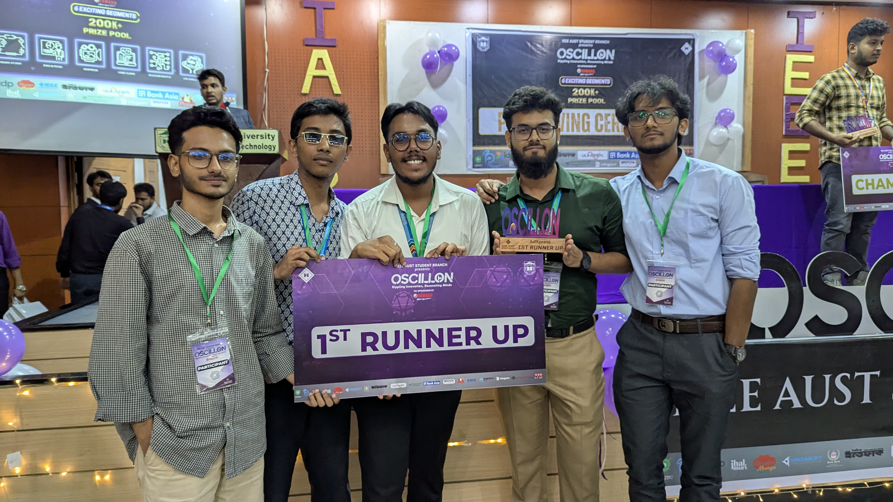

MD Badrudduza Alif
About Me
I am currently pursuing a Bachelor of Science in Computer Science and Engineering (CSE). My interests include software development, system design, and emerging technologies such as artificial intelligence and automation systems.
My programming background includes C++ and Java, and I regularly maintain and update my GitHub repositories while working on small development projects and web-based applications.
Achievements
1st Runners-Up — AUST Oscillon Ad Making Contest. Collaborated in a team-based creative project where we planned, developed, and presented an advertisement concept.

Location: Ahsanullah University of Science and Technology (AUST), Dhaka
Video CV
This short video introduces my academic background, programming experience, and career interests in software development and artificial intelligence.
In this video I briefly discuss my education, technical skills, and the projects I have worked on while developing my programming foundation.
If playback is blocked, watch on YouTube.